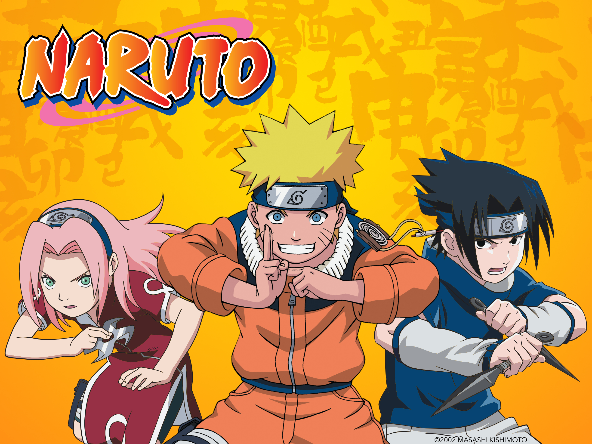
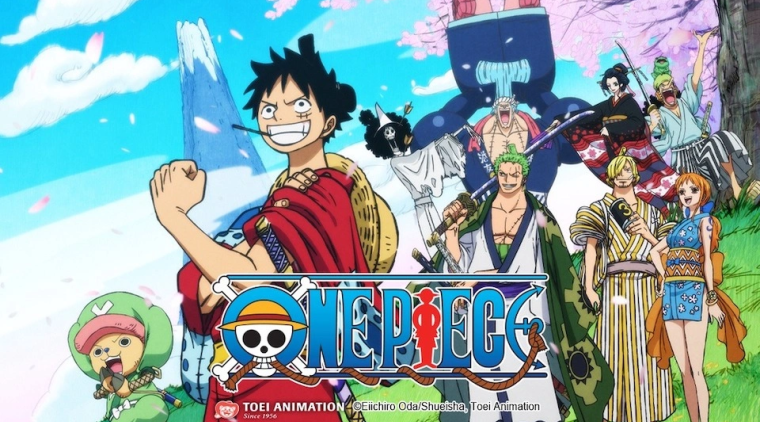

Dragon Ball Z
Serie animada.
Goku es un extraño y alegre niño que pasa sus días cazando y
comiendo hasta que un día conoce a Bulma, una chica muy linda,
inteligente y que solo piensa en chicos. Bulma está buscando
las Dragon Balls, unas esferas mágicas que se dice que si se
reúnen las siete, se te concederá cualquier deseo, ¡y Goku
tiene una que le dejó su abuelo como recuerdo! Esto será el
inicio de una gran aventura. Tomado de Crunchyroll.
Naruto
Serie animada.

Naruto Uzumaki es un niño marginado en la aldea ninja en la que
vive. En su interior reside el poder de una bestia que estuvo al
borde de destruir el pueblo años atrás, el Kyubi, el zorro de
nueve colas, lo que hace que nadie quiera acercarse a él por
considerarlo maldito. Pese a su soledad y su tristeza, Naruto
quiere ser un ninja, pero no uno cualquiera: quiere ser Hokage,
el líder de la aldea. En su camino, sus convicciones atraerán a
muchos amigos y compañeros de viaje. Tomado de Crunchyroll.
One Piece
Serie animada.

Embárcate en el viaje de tu vida con One Piece. La épica serie de
anime creada por el renombrado mangaka Eiichiro Oda es un fenómeno
global que ha cautivado los corazones de varias generaciones de
fanáticos a lo largo de 25 años. Esta emocionante aventura en alta
mar está llena de amistad inquebrantable, batallas épicas por la
libertad y la búsqueda incesante de sueños. Acompaña a Monkey D.
Luffy y su adorable tripulación pirata mientras descubren el
verdadero significado del poder y la justicia.
Monkey D. Luffy se
niega a permitir que nada ni nadie se interponga en su camino para
convertirse en el Rey de los Piratas. Con sus poderes otorgados por
la sobrenatural Fruta del Diablo, el joven y enérgico pirata busca
el tesoro legendario conocido como One Piece. Él trazará un rumbo
hacia las traicioneras aguas de Grand Line y reclutará un grupo
variopinto para conformar sus Piratas de Sombrero de Paja. ¡Este es
un capitán que nunca echará anclas hasta que él y sus amigos
alcancen sus sueños!
One Piece cuenta con más de 1100 episodios.
Actualmente en el arco de Egghead, los Sombrero de Paja por fin
conocen al tan esperado Dr. Vegapunk en la Isla Egghead. En
Crunchyroll se pueden ver todos los episodios subtitulados y
también todos los doblados al inglés, y ya van más de 1000. Además,
One Piece cuenta con 13 especiales de televisión y 15 películas,
siendo la última, One Piece Film Red, la más taquillera de la
franquicia. One Piece está producida por Toei Animation. Tomado de
Crunchyroll.